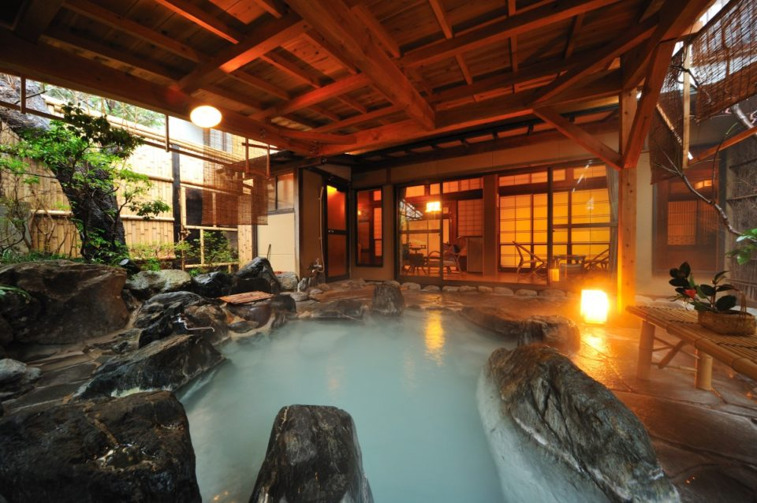
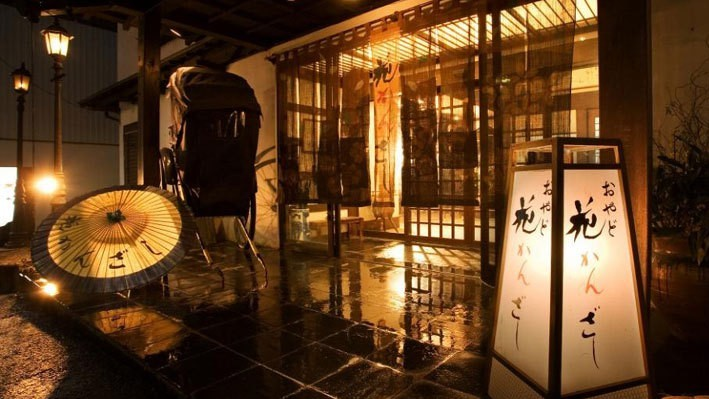
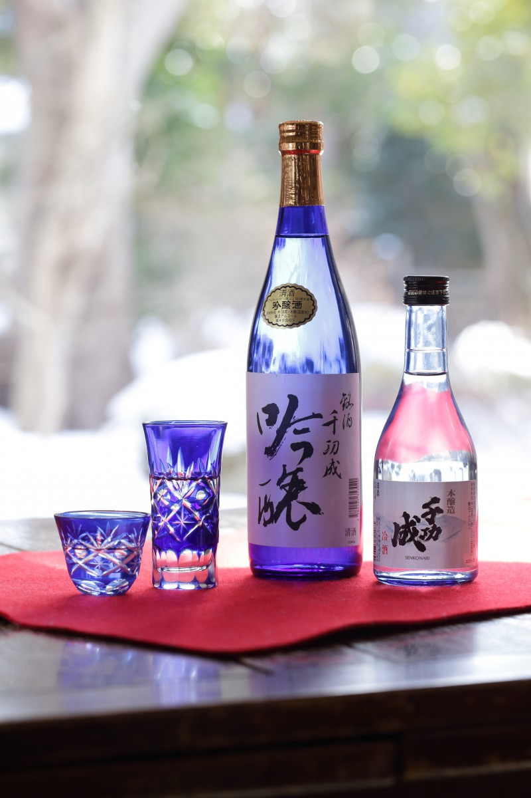
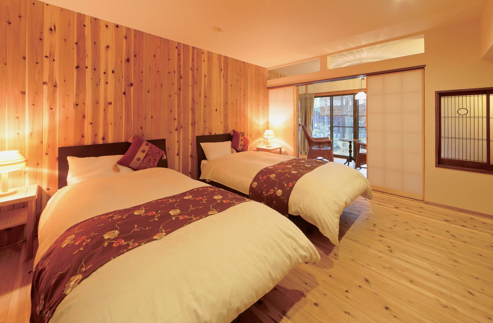

Префектура Фукусима · Нихоммацу, онсэн Дакэ · где остановиться
Рёкан «Хана-кандзаси» в онсэне Дакэ: горячий источник у подножия Адатары и сакэ прямо в купальне

Онсэн Дакэ лежит у подножия горы Адатара, и источнику здесь около 1200 лет. В рёкане «Хана-кандзаси» можно сидеть в горячей воде под открытым небом и пить местное сакэ: о таком хоть раз мечтал каждый, кто любит выпить.
Дорога
К подножию Адатары
До онсэна Дакэ добираться просто. Скоростной поезд линии Тохоку довозит до станции Корияма или Фукусима, оттуда по обычной линии Тохоку около 20 минут до станции Нихоммацу, а дальше 15 минут на машине. В посёлке 14 гостиниц, и главная улица тянется прямо от пруда к святилищу источника. На этой улице и стоит «Хана-кандзаси», один из самых популярных здесь рёканов: в нём умело соединили деревенскую простоту и изящное убранство.

Над горой Адатара, писал поэт, «есть небо, которого нет в Токио». Эта строка из сборника «Тиэкосё» Котаро Такамуры (1883–1956), поэта и скульптора, который посвятил книгу своей жене Тиэко. Природа у подножия горы и правда щедрая, а вода источника доходит до гостиничных купален удивительно мягкой.
Купальни
Кислый источник и сакэ в купальне
В рёкане две общие бани в ретро-стиле, отделанные плиткой, и при одной из них есть просторная открытая купальня, ротэнбуро. Мужская и женская половины меняются по времени, так что за вечер можно попробовать обе.
Вода здесь кислая и богата веществами, которые увлажняют кожу. Источник течёт без разбавления и без подогрева, и воду в купальнях не гоняют по кругу: она постоянно льётся и уходит. В неё медленно погружаешься, смотришь на полевые цветы, которые в любое время года цветут по всему саду, и слушаешь птиц.
Главная радость для любителей выпить ждёт в открытой купальне общей бани. Здесь подают местное сакэ, и пить его можно в масу, деревянной квадратной чарке, не выходя из горячей воды.

Номера
Восемь номеров и комната с садом
Номеров в рёкане всего восемь, и в трёх есть собственная купальня с водой из источника. Лучшим считают номер «Ёиматигуса» с убранством в стиле ретро-модерн. Японская комната выходит в зелёный сад, в глубине спальня с кроватями, а в саду своя открытая купальня.

Ужин
Горы, море и сакэ Нихоммацу
После купален подают ужин в стиле кайсэки из горных и морских продуктов, в отдельной комнате или в номере. К нему, конечно, местное сакэ. В Нихоммацу работают две сакэварни, Daishichi и Okunomatsu, обеим больше 250 лет, и сакэ обеих хорошо подходит к еде. Горячая вода из горного источника, местные продукты и сакэ: гостиница хороша и купальнями, и кухней.
Рёкан «Хана-кандзаси»
- Адрес
- префектура Фукусима, Нихоммацу, онсэн Дакэ, 1-104
- Телефон
- +81 243-24-2110
- Номера
- 8; ночь с ужином и завтраком от 18 000 до 34 000 иен с налогом (2019)
- Заезд / выезд
- 15:00 / 11:00
- Как добраться
- от станции JR Нихоммацу 15 минут на такси или 25 минут на автобусе; на машине 15 минут от развязки Нихоммацу скоростной дороги Тохоку